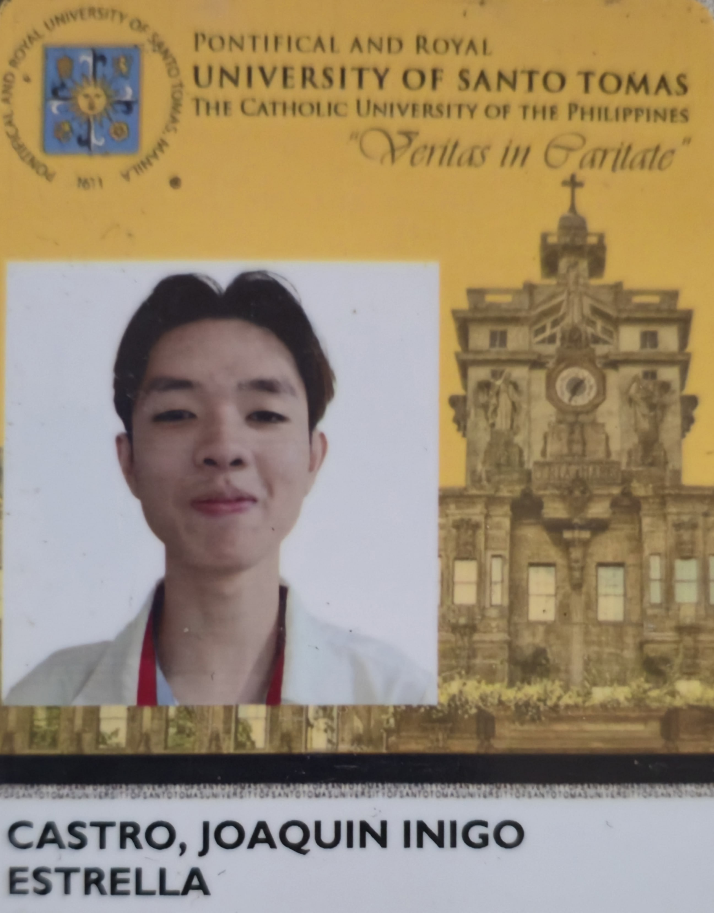

About Skills Projects Contacts
ABOUT ME

My name is Joaquin Inigo Castro and I was born on March 21, 2005.
My interests are music, movies, singing, coding and gaming.
I'm 20 years old currently studying BSIS at University of Santo
Tomas (UST). I studied previously in STI Ortigas-Cainta for a IT
strand in SHS where I first encountered programming and scripting.
I aspire to be a Web Developer someday and create some engaging
and easy-to-navigate websites.